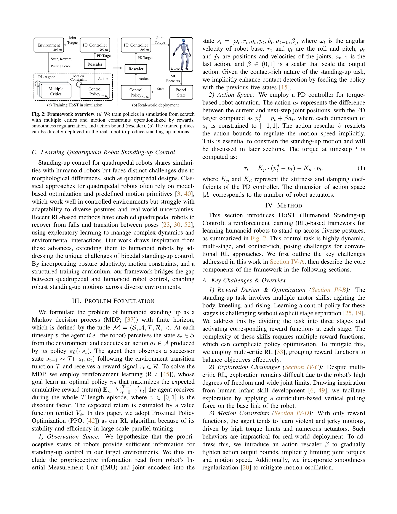

Essence

Fig. 1: Overview. (a) Our proposed framework HOST enables the humanoid robot to learn standing-up control via reinforcem
HoST는 강화학습 기반 프레임워크로 휴머노이드 로봇이 다양한 자세에서 일어서는 동작을 학습하고 실제 환경에서 robust하게 수행할 수 있도록 한다.
저자: Tao Huang, Junli Ren, Huayi Wang, Zirui Wang, Qingwei Ben, Muning Wen, Xiao Chen, Jianan Li, Jiangmiao Pang | 날짜: 2025-02-12 | URL: https://arxiv.org/abs/2502.08378
Fig. 1: Overview. (a) Our proposed framework HOST enables the humanoid robot to learn standing-up control via reinforcem
HoST는 강화학습 기반 프레임워크로 휴머노이드 로봇이 다양한 자세에서 일어서는 동작을 학습하고 실제 환경에서 robust하게 수행할 수 있도록 한다.
Fig. 1: Overview. (a) Our proposed framework HOST enables the humanoid robot to learn standing-up control via reinforcem

Fig. 2: Framework overview. (a) We train policies in simulation from scratch
총평: 이 논문은 휴머노이드 로봇의 standing-up control이라는 실질적 문제를 RL 기반으로 체계적으로 해결하며, 사전 궤적 없이 diverse posture에서의 실제 배포를 성공적으로 달성한 의미 있는 기여로, 실제 로봇 시스템의 자율성 향상에 중요한 발걸음이다.